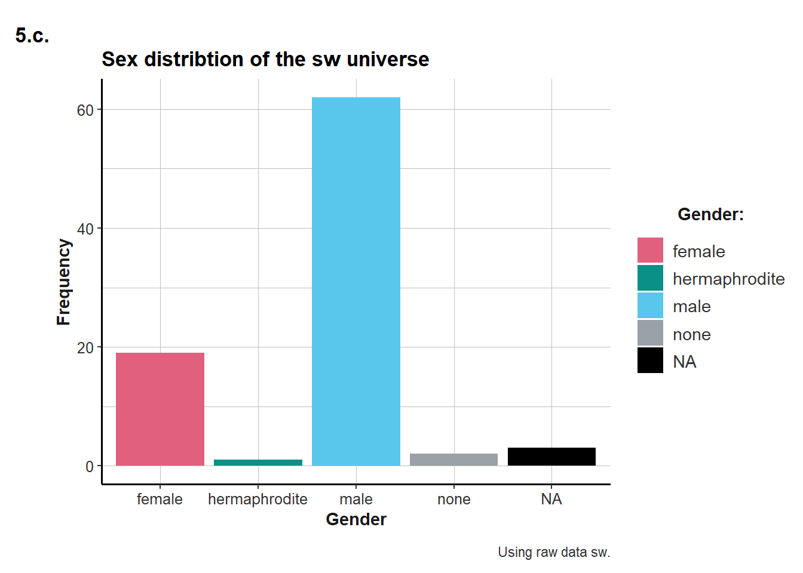

Module 4 Fourth Topic
4.1 Challenge 4
sw <- dplyr::starwars # Create sw dataframe
head(sw)## # A tibble: 6 x 13
## name height mass hair_color
## <chr> <int> <dbl> <chr>
## 1 Luke~ 172 77 blond
## 2 C-3PO 167 75 <NA>
## 3 R2-D2 96 32 <NA>
## 4 Dart~ 202 136 none
## 5 Leia~ 150 49 brown
## 6 Owen~ 178 120 brown, gr~
## # ... with 9 more variables:
## # skin_color <chr>,
## # eye_color <chr>,
## # birth_year <dbl>, gender <chr>,
## # homeworld <chr>, species <chr>,
## # films <list>, vehicles <list>,
## # starships <list>4.1.1 Question 1
dim(sw) # 1.a.## [1] 87 13dim.sw <- nrow(sw)*ncol(sw) # 1.b.4.1.2 Question 2
na.cells <- sum(is.na(sw)) # 2.a.
round(100*na.cells/dim.sw,1) # 2.b.## [1] 8.9colnames(sw[,colSums(is.na(sw)) == max(colSums(is.na(sw)))]) # 2.c.## [1] "birth_year"filter(sw, is.na(homeworld)==TRUE & (is.na(birth_year)==FALSE | is.na(mass)==FALSE)) # 2.d.## # A tibble: 3 x 13
## name height mass hair_color
## <chr> <int> <dbl> <chr>
## 1 Yoda 66 17 white
## 2 IG-88 200 140 none
## 3 Qui-~ 193 89 brown
## # ... with 9 more variables:
## # skin_color <chr>,
## # eye_color <chr>,
## # birth_year <dbl>, gender <chr>,
## # homeworld <chr>, species <chr>,
## # films <list>, vehicles <list>,
## # starships <list>4.1.3 Question 3
length(unique(sw$species)) # 3.## [1] 384.1.4 Question 4
length(which(sw$species == "Human")) # 4.a.i## [1] 35sw %>% # 4.a.ii.
filter(species=="Human") %>%
group_by(gender) %>%
count()## # A tibble: 2 x 2
## # Groups: gender [2]
## gender n
## <chr> <int>
## 1 female 9
## 2 male 26filter(sw, is.na(gender) | (gender != "male" & gender != "female")) %>% # 4.b.
count()## # A tibble: 1 x 1
## n
## <int>
## 1 6sw %>% # 4.c.
group_by(species, gender) %>% # Creates piles of similarly sexed members of the same species
count() %>% # Produces a table of tallies of the above groups
group_by(species) %>% # Groups within this table of tallies
count() %>% # Produces a tally of the numbers of members of the groups above
filter(n > 1)## # A tibble: 5 x 2
## # Groups: species [5]
## species n
## <chr> <int>
## 1 Droid 2
## 2 Human 2
## 3 Kaminoan 2
## 4 Twi'lek 2
## 5 <NA> 24.1.5 Question 5
tb <- sw %>% # 5.a.
group_by(gender) %>%
count()
my_cols <- unikn::usecol(c(Pinky, Seegruen, Seeblau, Grau))
ggplot(sw, aes(x = gender)) + # 5.b.
geom_bar(aes(fill = gender)) +
labs(title = "Sex distribtion of the sw universe",
tag = "5.b.",
x = "Gender",
y = "Frequency",
caption = "Using raw data sw.") +
scale_fill_manual(name = "Gender:", values = my_cols, na.value = "black") +
ds4psy::theme_ds4psy()
ggplot(tb, aes(x = gender, y = n)) + # 5.c., adding y=n to the aes()
geom_bar(aes(fill = gender), stat = "identity") + # Adding stat="identity" to the aes()
labs(title = "Sex distribtion of the sw universe",
tag = "5.c.",
x = "Gender",
y = "Frequency",
caption = "Using raw data sw.") +
scale_fill_manual(name = "Gender:", values = my_cols, na.value = "black") +
ds4psy::theme_ds4psy()
4.1.6 Question 6
sw %>% # 6.a.
group_by(homeworld) %>%
count() %>%
arrange(desc(n))## # A tibble: 49 x 2
## # Groups: homeworld [49]
## homeworld n
## <chr> <int>
## 1 Naboo 11
## 2 Tatooine 10
## 3 <NA> 10
## 4 Alderaan 3
## 5 Coruscant 3
## 6 Kamino 3
## 7 Corellia 2
## 8 Kashyyyk 2
## 9 Mirial 2
## 10 Ryloth 2
## # ... with 39 more rowssw %>% # 6.b.
filter(homeworld == "Naboo", eye_color == "orange") %>%
summarise(n = n(),
mn_height =mean(height))## # A tibble: 1 x 2
## n mn_height
## <int> <dbl>
## 1 3 209.4.1.7 Question 7
sw %>% # 7.
filter(species == "Droid") %>%
summarise(n = n(),
not_NA_h = sum(!is.na(height)),
md_height = median(height, na.rm=TRUE),
mn_height = mean(height, na.rm=TRUE),
sd_height = sd(height, na.rm=TRUE))## # A tibble: 1 x 5
## n not_NA_h md_height mn_height
## <int> <int> <dbl> <dbl>
## 1 5 4 132 140
## # ... with 1 more variable:
## # sd_height <dbl>4.1.8 Question 8
h_m <- sw %>% # 8.a.
group_by(species) %>%
summarise(mn_height = mean(height, na.rm=TRUE),
mn_mass = mean(mass, na.rm=TRUE))
h_m %>% # 8.b.
arrange(mn_height) %>%
slice(1:3) ## # A tibble: 3 x 3
## species mn_height mn_mass
## <chr> <dbl> <dbl>
## 1 Yoda's species 66 17
## 2 Aleena 79 15
## 3 Ewok 88 20h_m %>% # 8.c.
arrange(desc(mn_mass)) %>%
slice(1:3)## # A tibble: 3 x 3
## species mn_height mn_mass
## <chr> <dbl> <dbl>
## 1 Hutt 175 1358
## 2 Kaleesh 216 159
## 3 Wookiee 231 1244.1.9 Question 9
sw %>% # 9.a.
filter(!is.na(species)) %>%
group_by(species) %>%
summarise(n = n()) %>%
arrange(desc(n)) %>%
slice(1:3)## # A tibble: 3 x 2
## species n
## <chr> <int>
## 1 Human 35
## 2 Droid 5
## 3 Gungan 3sw %>% # 9.b.
select(name, homeworld, mass) %>%
group_by(homeworld) %>%
mutate(mn_mass = mean(mass, na.rm = TRUE),
lighter = mass < (mn_mass*0.8)
) %>%
filter(lighter == TRUE)## # A tibble: 5 x 5
## # Groups: homeworld [4]
## name homeworld mass mn_mass
## <chr> <chr> <dbl> <dbl>
## 1 R2-D2 Naboo 32 64.2
## 2 Leia~ Alderaan 49 64
## 3 R5-D4 Tatooine 32 85.4
## 4 Yoda <NA> 17 82
## 5 Padm~ Naboo 45 64.2
## # ... with 1 more variable:
## # lighter <lgl>